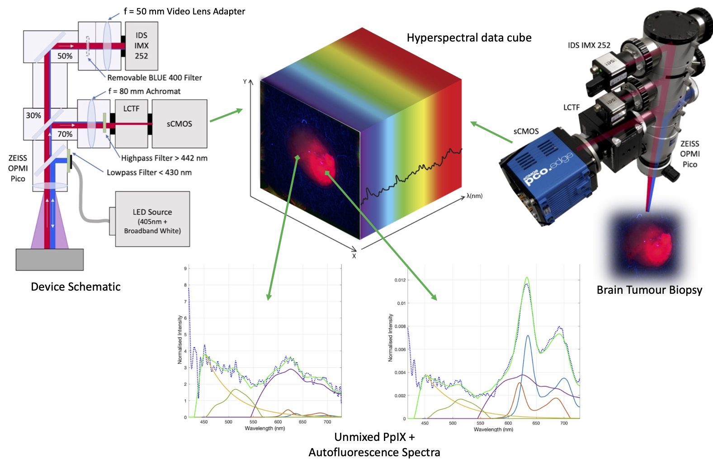

Gliomas are a type of tumor affecting glial cells in the brain. These make up 80% of malignant brain tumors and have no effective treatment options. While surgery is often performed for symptom reduction, the recurrence rate remains near 100%. This is due to the tumors' infiltrative nature and the fact that they are almost indistinguishable from healthy tissue. We are working on a novel hyperspectral imaging system to greatly improve the sensitivity of fluorescence-guided neurosurgery, allowing the surgeon to "see" differences in tissues that are not visible to the human eye.
I helped develop a device for this, which was installed at the University Hospital of Muenster, Germany. This allowed the neurosurgeons there to measure ex-vivo brain tumor tissue from hundreds of patients. With this data, we have determined multiple important factors about 5-ALA fluorescence, how to use it clinically, and how to better use the image data. We also developed several methodological improvements to the imaging system including deep learning and optimization-based data processing, machine learning-based tissue classification, and more.
I started this work in early 2018 when I did a 4-month internship in the Advanced Development department at Carl Zeiss Meditec AG in Oberkochen Germany. Here I worked in a small team on a new technology in the field of quantitative fluorescence microscopy. Upon completion of the 4-month internship, I was hired through Zeiss Canada to continue work on the project for the subsequent year (40 hrs per month), and then continued collaborating with neurosurgeons Dr. Eric Suero Molina and Prof. Dr. Walter Stummer at the University Hospital of Muenster to progress the reserach in my free time. Our publications are listed below. We have also collaborated with Dr. Pablo Valdes at the University of Texas and Profs. Antonio Di leva and Benoit Liquet at Macquarie University, Sydney, Australia.
This work has involved lab research and design work in the fields of optics and biophotonics, as well as programming and data analysis using deep learning, classical machine learning, computer vision, image processing, and augmented reality, predominantly in MATLAB and Python.

D. Black, A. Xie, J. Gill, B. Liquet, A. Di leva, W. Stummer, E. Suero Molina. "Deep Learning-Based Hyperspectral Image Correction and Unmixing for Brain Tumor Surgery," in iScience, Oct. 2024.
D. Black, B. Liquet, S. Kaneko, A. Di leva, W. Stummer, E. Suero Molina. "A Spectral Library and Method for Sparse Unmixing of Hyperspectral Images in Fluorescence Guided Resection of Brain Tumors," in Biomedical Optics Express, accepted June 2024.
E. Suero Molina, D. Black, A. Walke, G. Azemi, F. D'Alessandro, S. König, W. Stummer. "Unraveling the blue shift in porphyrin fluorescence in glioma: The 620 nm peak and its potential significance in tumor biology," in Frontiers in Neuroscience, Vol 17. October, 2023.
D. Black, D. Byrne, A. Walke, S. Liu, A. Di leva, S. Kaneko, W. Stummer, S. Salcudean, E. Suero Molina. "Towards Machine Learning-based Quantitative Hyperspectral Image Guidance for Brain Tumor Resection," in Nature Communications Medicine, Accepted April 2024.
A. Walke, D. Black, W. Stummer, S. Kaiser, P. Valdes, E. Suero Molina. "Hyperspectral imaging in malignant glioma: Challenges in, and recommendations for, ex vivo biopsy measurements," in Nature Scientific Reports Vol 13. March, 2023.
E. Suero Molina, D. Black, S. Kaneko, M. Muether, W. Stummer. "Double dose of 5-ALA and its effect on PPIX expression in Low-Grade Glioma," in Journal of Neurosurgery. February, 2022.
W. Stummer, S. Kaneko, D. Black, E. Suero Molina. "5-ALA induced porphyrin contents in various brain tumors - Implications regarding imaging device design and their validation," in Neurosurgery. October, 2021.
D. Black, S. Kaneko, A. Walke, S. Koenig, W. Stummer, E. Suero Molina. "Characterization of Autofluorescence and Quantitative Protoporphyrin IX Biomarkers for Optical Spectroscopy-Guided Glioma Surgery," in Nature: Scientific Reports. Vol. 11, Oct. 8, 2021.
E. Suero-Molina, S. Kaneko, P. Sporns, S. Schipmann, D. Black, W. Stummer. "Fluorescence Real-Time Kinetics of Protoporphyrin IX after 5-ALA Administration in Low-Grade Glioma," in Journal of Neurosurgery. Oct. 2020.
S. Kaneko, E. Suero Molina, C. Ewelt, N. Warneke, W. Stummer. "Fluorescence-Based Measurement of Real-Time Kinetics of Protoporphyrin IX After 5-Aminolevulinic Acid Administration in Human In Situ Malignant Gliomas," in Neurosurgery. 2019;85(4):E739-E746.
D. Black, S. Kaneko, A. Walke, S. Koenig, W. Stummer, E. Suero Molina. "Characterisation of autofluorescence and quantitative protoporphyrin IX biomarkers for optical spectroscopy-guided glioma surgery," in the German Neurosurgery Society (DGNC) Annual Conference. Köln, Germany. May 29-June 1, 2022. Abstract Presentation.
E. Suero Molina, S. Kaneko, P. B. Sporns, S. Schipmann-Miletic, D. Black, W. Stummer. "Fluorescence real-time kinetics of protoporphyrin-IX after 5-ALA administration in low grade glioma," in the American Association of Neurosurgeons Conference. 2020. Presentation
E. Suero Molina, S. Kaneko, P. B. Sporns, S. Schipmann-Miletic, D. Black, W. Stummer. "Fluorescence real-time kinetics of protoporphyrin-IX after 5-ALA administration and factors predicting fluorescence in low-grade glioma," in the Joint Conference of the German Neurosurgery Society (DGNC) and Japanese Neurosurgery Society. 2020.